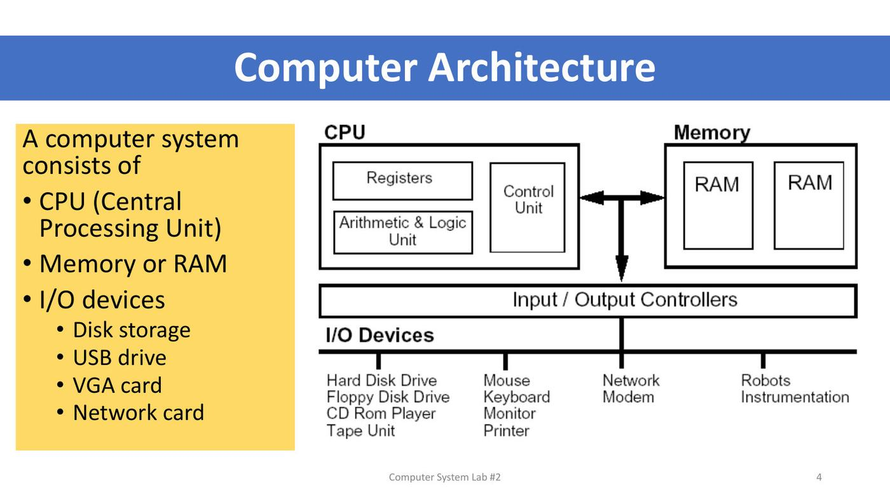
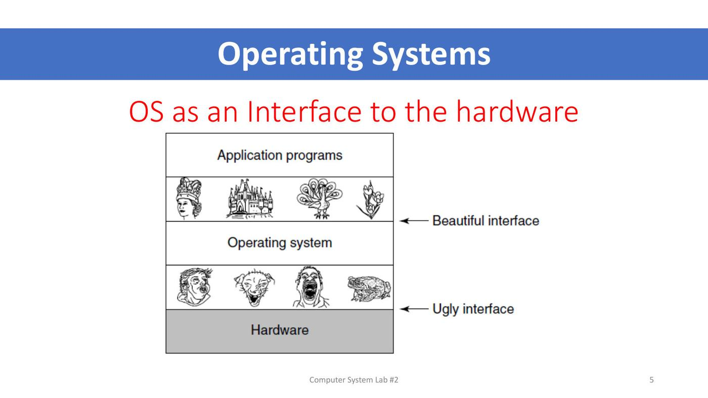
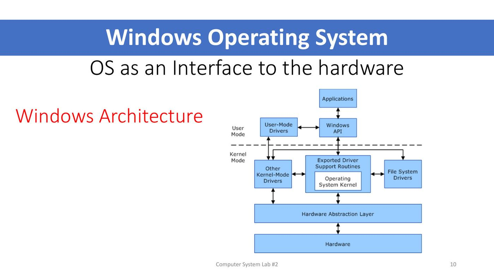
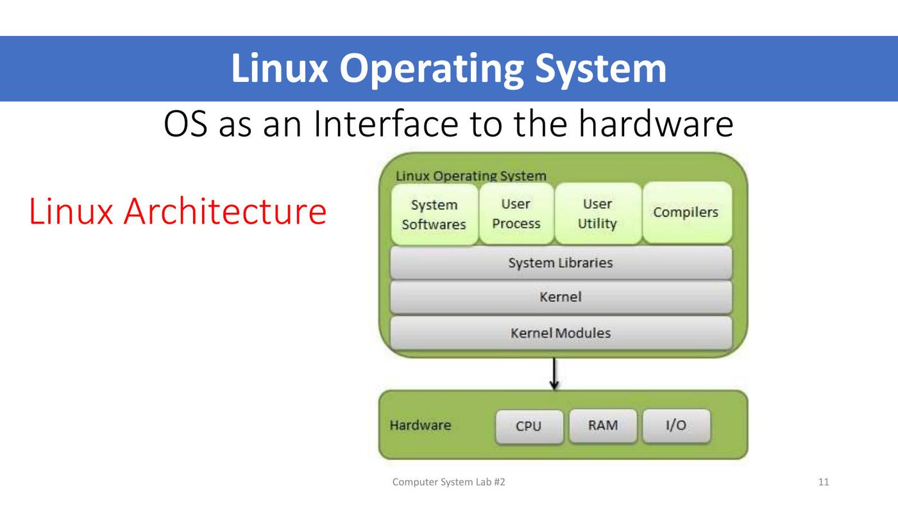
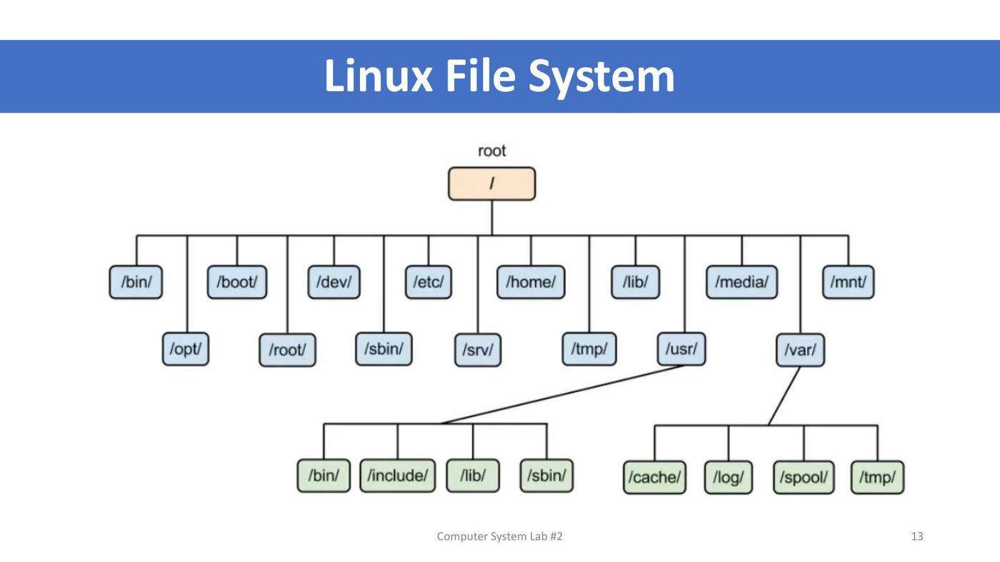
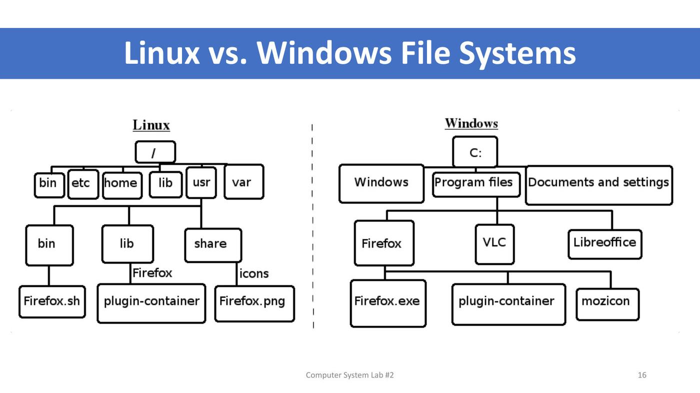

ภาพรวมบทนี้ ต่อจาก L1 ที่ติดตั้ง Ubuntu ใน VM แล้ว
(1) Lecture 2 อธิบายว่า OS คือ "interface ระหว่างโปรแกรมกับฮาร์ดแวร์" ทำงานโดย virtualize CPU และ memory ให้แต่ละโปรแกรม เปรียบเทียบสถาปัตยกรรม Windows vs Linux และ โครงสร้าง file system ของทั้งสอง ปิดท้ายด้วยข้อมูลไฟล์ (
ls -l) และสิทธิ์ไฟล์เบื้องต้น(2) Lab 2 ฝึก command line ครั้งแรก:
cmd/dirบน Windows และคำสั่งพื้นฐาน Linux 13 คำสั่ง (pwd,ls,cd,mkdir,rmdir,echo,grep,nano,cat,more,cp,rm,tail) พร้อม redirect>และ pipe|คำสั่งเหล่านี้คือพื้นฐานที่ต้องใช้ทุกแลปหลังจากนี้
ส่วนที่ 1 — Lecture 2: OS Introduction
1. ข้อมูลรายวิชา (ย่อ)
- สัปดาห์ที่ 2 = แนะนำโครงสร้างของระบบปฏิบัติการ Linux และเรียนรู้คำสั่ง Linux เบื้องต้น (วันที่ 11 August 2026)
- เกณฑ์คะแนนเหมือน L1: เข้าเรียน 80% · รายงานแลป 25 · ทดสอบย่อย 25 · กลางภาค 25 · ปลายภาค 25
- ⚠️ ส่งรายงานแลป ภายใน 23.59 น. ของวันอังคารหรือวันที่เรียน · ทดสอบย่อยทุกสัปดาห์ก่อนจบคาบ
2. Computer Architecture

A computer system consists of CPU, Memory (RAM), I/O devices (disk storage, USB drive, VGA card, network card) — เหมือน L1 แต่รอบนี้แผนภาพละเอียดขึ้น:
| ส่วน | ข้างในมีอะไร |
|---|---|
| CPU | Registers, Arithmetic & Logic Unit (ALU), Control Unit |
| Memory | RAM หลายแผง |
| Input / Output Controllers | ตัวกลางเชื่อม CPU/Memory กับอุปกรณ์ |
| I/O Devices | Hard Disk Drive, Floppy Disk Drive, CD Rom Player, Tape Unit · Mouse, Keyboard, Monitor, Printer · Network, Modem · Robots, Instrumentation |
💡 (อธิบายเพิ่ม) ALU คำนวณเลขและตรรกะ · Control Unit ควบคุมลำดับการทำงานตามคำสั่ง · Registers คือหน่วยความจำเล็กที่เร็วที่สุด อยู่ใน CPU เอง
3. OS as an Interface to the Hardware ⭐

แผนภาพแบ่งเป็นชั้น: Application programs → Operating system → Hardware
- ระหว่าง application กับ OS = "Beautiful interface" (ภาพปราสาท นกยูง)
- ระหว่าง OS กับ hardware = "Ugly interface" (ภาพหน้าตาน่ากลัว)
💡 ความหมาย (อธิบายเพิ่ม): ฮาร์ดแวร์คุมยากมาก (ต้องสั่งผ่าน register, จัดการ interrupt, จำรายละเอียดของอุปกรณ์แต่ละรุ่น) OS รับหน้าที่คุยกับส่วนที่ "น่าเกลียด" นี้แทน แล้วเสนอสิ่งที่ "สวยงาม" ใช้ง่ายให้โปรแกรม เช่น แค่สั่ง "เปิดไฟล์" ไม่ต้องรู้ว่าข้อมูลอยู่ sector ไหนของดิสก์
4. Virtual Machines
4.1 ทบทวน: Host / VM / Guest
- Host OS = Windows 10 · Virtual Machine = Oracle VM · Guest OS = Ubuntu (รายละเอียดใน L1)
4.2 Virtualization of Hardware
- OS สร้าง "Extended Machine" คั่นระหว่าง Hardware กับโปรแกรม
- Program 1–4 ต่างได้ Resources ของตัวเอง เหมือนแต่ละโปรแกรมมีเครื่องเป็นของตัวเอง
💡 (อธิบายเพิ่ม) คำว่า "virtual machine" ในบริบทนี้กว้างกว่า VirtualBox: OS ทุกตัวก็ทำให้แต่ละโปรแกรมเห็น "เครื่องเสมือน" ของตัวเอง โดยแบ่งทรัพยากรจริงให้
4.3 Virtualizing CPU
- OS สลับระหว่างโปรแกรม (switching between programs) · CPU รันทีละ instruction (run one instruction at a time)
- คำถามที่ OS ต้องตอบ:
- สลับระหว่างโปรแกรม (processes) อย่างไร?
- โปรแกรมไหนควรได้ CPU ก่อน?
💡 (อธิบายเพิ่ม) CPU 1 ตัวทำได้ทีละงาน แต่ OS สลับเร็วมาก (หลายร้อยครั้งต่อวินาที) จนดูเหมือนทุกโปรแกรมรันพร้อมกัน คำถาม "ใครได้ก่อน" คือเรื่อง CPU scheduling (เรียนใน L8 เรื่อง process)
4.4 Virtualizing Memory
- แต่ละโปรแกรมมี address space ของตัวเอง — ทุกโปรแกรมเห็น virtual address เริ่มที่ 0x00000 เหมือนกัน แต่ถูกวางไว้คนละที่ใน physical memory (เช่น Program 1 อยู่ที่ physical address 0x32000)
- คำถามที่ OS ต้องตอบ:
- จะ map program address (virtual) ไปเป็น physical address อย่างไร?
- จะจัดสรร memory ให้โปรแกรมอย่างไร?
- ถ้า physical memory ไม่พอ จะทำอย่างไร?
💡 (อธิบายเพิ่ม) เปรียบเทียบ: ทุกคนในโรงแรมคิดว่าตัวเองอยู่ "ห้อง 1" แต่พนักงานต้อนรับ (OS) รู้ว่าห้อง 1 ของแต่ละคนคือห้องจริงเบอร์อะไร · ถ้า RAM ไม่พอ OS ย้ายข้อมูลบางส่วนไปพักบนดิสก์ (swap) — เห็นไฟล์
swapfileใน/ของ Ubuntu ด้วย
5. Windows Architecture vs Linux Architecture
Windows Architecture

| ชั้น | ส่วนประกอบ |
|---|---|
| User Mode | Applications, Windows API, User-Mode Drivers |
| Kernel Mode (อยู่ใต้เส้นประ) | Exported Driver Support Routines + Operating System Kernel, Other Kernel-Mode Drivers, File System Drivers |
| Hardware Abstraction Layer (HAL) | |
| Hardware |
Linux Architecture

| ชั้น | ส่วนประกอบ |
|---|---|
| บนสุด | System Softwares, User Process, User Utility, Compilers |
| System Libraries | |
| Kernel | |
| Kernel Modules | |
| ล่างสุด | Hardware: CPU, RAM, I/O |
⚠️ จุดร่วมของทั้งสอง (อธิบายเพิ่ม): โปรแกรมไม่เคยคุยกับฮาร์ดแวร์ตรง ๆ ต้องผ่าน API/library → kernel ก่อนเสมอ · Windows แยก user mode / kernel mode ชัดในภาพ (Linux ก็มีการแยกแบบเดียวกัน) · Windows มี HAL ซ่อนความต่างของฮาร์ดแวร์ ส่วน Linux ใช้ kernel modules โหลด driver เพิ่มได้
6. Windows File System
- โครงสร้างเริ่มที่ไดรฟ์
C:\แตกเป็นProgram Files(→ Common Files, Microsoft Office, Microsoft.NET),Windows(→ system32, assembly, Web),temp - เข้า Command Prompt แล้วใช้
cd \ไปที่ root ของไดรฟ์ และdirดูรายการ (เห็น<DIR>= โฟลเดอร์, บรรทัดท้ายบอกจำนวนไฟล์/โฟลเดอร์และพื้นที่ว่าง)
7. Linux File System ⭐

- ทุกอย่างเริ่มจาก root
/(ไม่มีไดรฟ์ C: D:) - ระดับแรกใต้
/:/bin/,/boot/,/dev/,/etc/,/home/,/lib/,/media/,/mnt/,/opt/,/root/,/sbin/,/srv/,/tmp/,/usr/,/var/ /usr/มี/bin/,/include/,/lib/,/sbin/·/var/มี/cache/,/log/,/spool/,/tmp/
หน้าที่ของแต่ละ directory (อธิบายเพิ่ม — สไลด์มีแค่ชื่อ):
| Directory | เก็บอะไร |
|---|---|
/bin |
คำสั่งพื้นฐานที่ทุกคนใช้ เช่น ls, cp |
/sbin |
คำสั่งดูแลระบบ (system binaries) |
/boot |
ไฟล์สำหรับบูต เช่น kernel (vmlinuz), initrd.img |
/dev |
ไฟล์แทนอุปกรณ์ (devices) เช่น ดิสก์ |
/etc |
ไฟล์ตั้งค่าระบบ เช่น /etc/passwd (L4–L5) |
/home |
home directory ของผู้ใช้แต่ละคน เช่น /home/itcso |
/root |
home ของผู้ใช้ root |
/lib |
library ที่โปรแกรมใช้ร่วมกัน |
/media, /mnt |
จุด mount อุปกรณ์ถอดได้ / mount ชั่วคราว (L7) |
/opt |
โปรแกรมเสริมที่ติดตั้งเพิ่ม |
/srv |
ข้อมูลของ service ที่เครื่องให้บริการ |
/tmp |
ไฟล์ชั่วคราว |
/usr |
โปรแกรมและ library ของผู้ใช้ส่วนใหญ่ |
/var |
ข้อมูลที่เปลี่ยนบ่อย เช่น log (/var/log), cache |
/proc, /sys |
ข้อมูลของ kernel และ process (ขนาด 0 ใน ls -l) |
สไลด์แสดงผลจริงใน Ubuntu:
cd /แล้วls→ เห็น bin, boot, cdrom, dev, etc, home, initrd.img, lib, lib64, lost+found, media, mnt, opt, proc, root, run, sbin, snap, srv, swapfile, sys, tmp, usr, var, vmlinuzls -l | more→ ทุก directory เป็นของ root root ·initrd.img -> boot/initrd.img-5.3.0-59-genericขึ้นต้นด้วยl= symbolic link ·/tmpมีสิทธิ์drwxrwxrwt(ทุกคนเขียนได้)
8. Linux vs Windows File Systems

ตัวอย่าง: ติดตั้ง Firefox
| Linux | Windows | |
|---|---|---|
| จุดเริ่ม | / |
C: |
| ระดับแรก | bin, etc, home, lib, usr, var | Windows, Program files, Documents and settings |
| ไฟล์ของ Firefox | กระจายตามประเภท: /usr/bin/Firefox.sh (ตัวรัน), /usr/lib/Firefox/plugin-container (library), /usr/share/icons/Firefox.png (ไอคอน) |
รวมในโฟลเดอร์ของโปรแกรม: Program files\Firefox\ มี Firefox.exe, plugin-container, mozicon |
⚠️ ต่างกันที่แนวคิด: Linux แยกไฟล์ตามชนิด (ตัวรันไว้ bin, library ไว้ lib, ไอคอนไว้ share) ส่วน Windows แยกตามโปรแกรม (ทุกอย่างของโปรแกรมอยู่โฟลเดอร์เดียว) (อธิบายเพิ่ม: Linux ยังแยกตัวพิมพ์เล็กใหญ่ และใช้
/คั่น path ส่วน Windows ใช้\)
9. File Information และ File Permission
File Information — ผล ls -l
ตัวอย่าง: -rw-r--r-- 1 ittipon muict 68524 2011-12-19 07:18 foo.txt
| ส่วน | ความหมาย |
|---|---|
-rw-r--r-- |
File type and Permissions |
1 |
"link count" |
ittipon |
Owner |
muict |
Group |
68524 |
Size (in bytes) |
2011-12-19 07:18 |
Modification Time/Date |
foo.txt |
File Name |
File Permission
- ไฟล์มีสิทธิ์สำหรับ user, group, other (u, g, o) — ในภาพเรียก Self / Group / Public
- สิทธิ์มี read, write, execute (r, w, x)
- ⭐ เจ้าของไฟล์ (owner) เปลี่ยนสิทธิ์ไฟล์ของตัวเองได้เสมอ
รายละเอียดเต็มของเรื่องสิทธิ์ (chmod, chown, chgrp) อยู่ใน L5
ส่วนที่ 2 — Lab 2: Basic Unix Commands
10. วัตถุประสงค์และสิ่งที่ส่ง
Objectives:
- Review on Virtual Machines
- Learn about Windows and Linux operating systems
- Study file systems of Windows and Linux
- Basic commands of Linux Ubuntu
What to Submit: แคปหน้าจอทุกคำสั่งที่ฝึก รวมเป็น PDF ไฟล์เดียว ส่ง MyCourses ชื่อ 6887xxx_lab2.pdf · ⚠️ ส่งวันนี้ (August 11) ก่อนเที่ยงคืน
11. Command Line ใน Windows
- กดปุ่ม search → พิมพ์
cmd→ Enter → เปิด Command Prompt (prompt เช่นC:\Users\Sudsanguan>) - พิมพ์
dir→ แสดงไฟล์และโฟลเดอร์ใน directory ปัจจุบัน (โฟลเดอร์มีป้าย<DIR>) - พิมพ์
exit→ ปิดหน้าต่าง Command Prompt
💡
dirของ Windows ≈lsของ Linux (อธิบายเพิ่ม)
12. คำสั่ง Linux พื้นฐาน ⭐⭐
คำสั่งที่ใช้ในแลป: pwd, ls, cd, mkdir, rmdir, echo, grep, nano, cat, more, cp, rm, tail
ตารางสรุปคำสั่ง
| คำสั่ง | ใช้ทำอะไร (จากสไลด์) | ตัวอย่าง |
|---|---|---|
pwd |
แสดง directory หรือ path ที่อยู่ปัจจุบัน | pwd → /home/itcso |
ls |
แสดงข้อมูลภายใน directory | ls |
ls -l |
แสดงแบบรายละเอียด ทั้งชื่อไฟล์/directory, ขนาด, เวลา | ls -l |
ls -a |
แสดงไฟล์ที่ถูกซ่อนไว้ | ls -a |
ls -la |
รายละเอียด และ ไฟล์ซ่อน | ls -la |
cd |
เปลี่ยน directory | cd /, cd .., cd |
mkdir |
สร้าง directory | mkdir testdirectory |
rmdir |
ลบ directory | rmdir testdirectory |
echo |
แสดงผล (ใช้คู่ > เพื่อเขียนลงไฟล์) |
echo "ict mahido test" > testfile |
grep |
ค้นหาข้อความในไฟล์ | grep ict myfile |
nano |
editor สร้างหรือแก้ไฟล์ | nano myfile |
cat |
ดูเนื้อหาทั้งหมดของไฟล์ | cat myfile |
more |
ดูเนื้อหาไฟล์ทีละหน้า | more myfile |
tail |
ดูเนื้อหาส่วนท้ายของไฟล์ | tail myfile |
cp |
copy ไฟล์ | cp myfile file1 |
rm |
ลบไฟล์ | rm file1 |
rm -i |
ลบไฟล์ แต่ถามยืนยันอีกครั้ง | rm -i file2 |
mv (มีในภาพ) |
เปลี่ยนชื่อ / ย้ายไฟล์ | mv testfile myfile |
12.1 pwd, ls และตัวเลือก
lsธรรมดาใน home เห็น: Desktop, Documents, Downloads, Music, Pictures, Public, snap, Templates, Videosls -aเห็นเพิ่ม:.,..,.bash_history,.bash_logout,.bashrc,.cache,.config,.gnupg,.local,.profile,.sshls -la→total 80และเห็นสิทธิ์/เจ้าของ/ขนาดของทั้งไฟล์ปกติและไฟล์ซ่อน
💡 (อธิบายเพิ่ม) ไฟล์ที่ชื่อขึ้นต้นด้วย
.คือไฟล์ซ่อน มักเป็นไฟล์ตั้งค่า เช่น.bashrc·.= directory ปัจจุบัน ·..= directory แม่
12.2 cd — การเดินใน directory
ลำดับในสไลด์:
$ pwd → /home/itcso
$ cd / → ไปที่ root
$ pwd → /
$ ls → bin boot cdrom dev etc home lib ... usr var
$ cd → cd เปล่า ๆ = กลับ home
$ pwd → /home/itcso
$ cd .. → ขึ้นไป directory แม่
$ pwd → /home
$ cd → กลับ home อีกครั้ง
$ pwd → /home/itcso
| รูปแบบ | ไปที่ไหน |
|---|---|
cd / |
root ของระบบ |
cd (ไม่ใส่อะไร) |
home directory ของตัวเอง |
cd .. |
directory แม่ (ขึ้นไป 1 ชั้น) |
cd ชื่อ |
directory ย่อยชื่อนั้น |
💡 prompt บอกตำแหน่งด้วย:
~= home,/homeเมื่ออยู่/home,~/testdirเมื่ออยู่ใน testdir
12.3 mkdir / rmdir
$ mkdir testdirectory → ls เห็น testdirectory เพิ่ม
$ cd testdirectory/
$ pwd → /home/itcso/testdirectory
$ cd ..
$ rmdir testdirectory → ls ไม่เห็นแล้ว
⚠️ (อธิบายเพิ่ม)
rmdirลบได้เฉพาะ directory ว่าง ถ้ามีไฟล์ข้างในต้องลบไฟล์ก่อน
12.4 echo, redirect >, mv, grep
$ echo "ict mahido test" > testfile → สร้างไฟล์ testfile ที่มีข้อความนี้
$ ls → testfile
$ mv testfile myfile → เปลี่ยนชื่อเป็น myfile
$ grep ict myfile → ict mahido test (คำที่เจอถูกไฮไลต์)
>คือการ redirect output — ส่งผลลัพธ์ที่ปกติขึ้นจอไปเขียนลงไฟล์ใหม่แทน (รูปแบบ:echo "test" > test1)
⚠️ (อธิบายเพิ่ม)
>เขียนทับไฟล์เดิมทั้งหมด ถ้าอยากต่อท้ายใช้>>
12.5 nano — สร้างหรือแก้ไขไฟล์
nano myfileเปิดไฟล์ใน editor (GNU nano 6.2) แล้วพิมพ์แก้ได้เลย (ในสไลด์เพิ่มบรรทัดจนเป็น ict / mahidol university / test / day1)Ctrl + O= Write Out (บันทึก) → ถามFile Name to Write: myfileกด EnterCtrl + X= Exit (ออก)- แถบล่างแสดงคีย์ลัด (
^= Ctrl): ^G Help, ^O Write Out, ^W Where Is, ^K Cut, ^T Execute, ^X Exit, ^R Read File, ^\ Replace, ^U Paste, ^J Justify
nano และ vim จะเรียนละเอียดใน L6
12.6 grep, cat, tail, more
หลังแก้ไฟล์ myfile แล้ว:
$ grep university myfile → mahidol university
$ cat myfile → ict / mahidol university / test / day1 (ทั้งไฟล์)
$ tail myfile → ส่วนท้ายของไฟล์ (ไฟล์สั้นจึงเห็นทั้งหมด)
$ more myfile → ดูทีละหน้า (ไฟล์สั้นจึงเห็นทั้งหมด)
| คำสั่ง | ต่างกันที่ (อธิบายเพิ่ม) |
|---|---|
cat |
พ่นทั้งไฟล์ในครั้งเดียว เหมาะกับไฟล์สั้น |
more |
หยุดทีละหน้าจอ กด Space ไปหน้าถัดไป, q ออก เหมาะกับไฟล์ยาว |
tail |
แสดง 10 บรรทัดสุดท้าย โดยค่าเริ่มต้น เหมาะกับดู log ล่าสุด |
12.7 cp
$ cp myfile file1 → ls เห็น file1 myfile
$ cat file1 → เนื้อหาเหมือน myfile ทุกบรรทัด
$ grep da file1 → day1 (grep หาข้อความบางส่วนของคำได้)
12.8 Redirect > กับ pipe |
$ ls -l
-rw-rw-r-- 1 itcso itcso 36 ... file1
-rw-rw-r-- 1 itcso itcso 36 ... myfile
$ ls -l | cat > file2
$ cat file2
total 8
-rw-rw-r-- 1 itcso itcso 36 ... file1
-rw-rw-r-- 1 itcso itcso 0 ... file2
-rw-rw-r-- 1 itcso itcso 36 ... myfile
>หมายถึงการ redirect output ไปยังไฟล์ใหม่ — ผลของls -lถูกเก็บในไฟล์file2แทนการขึ้นจอ- (อธิบายเพิ่ม)
|(pipe) ส่งผลลัพธ์ของคำสั่งซ้ายไปเป็น input ของคำสั่งขวา (ในสไลด์ls -l | moreก็ใช้ pipe เพื่อดูทีละหน้า)
💡 ทำไม file2 ในรายการมีขนาด 0? (อธิบายเพิ่ม) shell สร้างไฟล์ file2 เปล่าก่อน แล้วค่อยรัน
ls -lดังนั้น ls จึงเห็น file2 ที่ยังว่างอยู่
12.9 Wildcard * และ rm
$ ls → file1 file2 myfile
$ ls file* → file1 file2
$ grep ict * → file1:ict myfile:ict
$ rm file1
$ ls → file2 myfile
*(อธิบายเพิ่ม) = wildcard แทนตัวอักษรอะไรก็ได้กี่ตัวก็ได้ ·file*= ทุกไฟล์ที่ขึ้นต้นด้วย file ·grep ict *= หาในทุกไฟล์ และบอกชื่อไฟล์ที่เจอหน้าบรรทัดrmลบไฟล์ ·rm -iถามยืนยันก่อนลบ
⚠️ (อธิบายเพิ่ม) Linux ไม่มีถังขยะสำหรับ
rmลบแล้วหายเลย จึงควรใช้rm -iถ้าไม่แน่ใจ และระวังrm *
คำศัพท์สำคัญ
| คำศัพท์ | ความหมาย | จำง่าย ๆ ว่า |
|---|---|---|
| Registers / ALU / Control Unit | ส่วนประกอบของ CPU: หน่วยความจำในตัว / คำนวณ / ควบคุม | ส่วนของสมอง |
| I/O Controller | ตัวกลางเชื่อม CPU กับอุปกรณ์ | ล่าม |
| OS as an interface | OS ซ่อน "ugly interface" ของฮาร์ดแวร์ แล้วให้ "beautiful interface" กับโปรแกรม | ตัวแปลงของยากเป็นของง่าย |
| Extended machine | เครื่องเสมือนที่ OS สร้างให้แต่ละโปรแกรม | เครื่องส่วนตัวของโปรแกรม |
| Virtualizing CPU | สลับโปรแกรมให้ใช้ CPU ผลัดกัน | ผลัดกันใช้ |
| Virtualizing memory / address space | แต่ละโปรแกรมมี virtual address ของตัวเอง OS map ไป physical address | ห้อง 1 ของใครของมัน |
| User mode / Kernel mode | โหมดโปรแกรมทั่วไป / โหมดของ kernel ที่เข้าถึงฮาร์ดแวร์ได้ | ห้องลูกค้า / ห้องครัว |
| HAL | Hardware Abstraction Layer ของ Windows | ซ่อนความต่างของฮาร์ดแวร์ |
| Kernel modules | ส่วนเสริมของ Linux kernel ที่โหลดเพิ่มได้ | ปลั๊กอิน kernel |
root directory / |
จุดเริ่มต้นของ file system Linux | รากต้นไม้ |
| Home directory | ที่เก็บไฟล์ของผู้ใช้ /home/ชื่อ (~) |
บ้าน |
| Hidden file | ไฟล์ที่ชื่อขึ้นต้นด้วย . เห็นด้วย ls -a |
ไฟล์ซ่อน |
. / .. |
directory ปัจจุบัน / directory แม่ | ที่นี่ / ข้างบน |
Redirect > |
ส่ง output ไปเขียนลงไฟล์ (ทับของเดิม) | เทใส่ไฟล์ |
Pipe | |
ส่ง output ของคำสั่งหนึ่งเป็น input ของอีกคำสั่ง | ท่อต่อคำสั่ง |
Wildcard * |
แทนตัวอักษรใดก็ได้ | ไพ่ joker |
| Symbolic link | ไฟล์ที่ชี้ไปยังไฟล์อื่น ขึ้นต้น l ใน ls -l |
ทางลัด |
สรุปท้ายบท / จุดที่มักออกสอบ
เรื่องที่ต้องจำ
- CPU = Registers + ALU + Control Unit · I/O ผ่าน I/O Controllers
- OS = interface: ด้านบน beautiful (ให้โปรแกรม) ด้านล่าง ugly (ฮาร์ดแวร์)
- Virtualizing CPU: สลับโปรแกรม, ใครได้ CPU ก่อน · Virtualizing Memory: map virtual → physical, จัดสรร, ถ้า RAM ไม่พอ
- Windows arch: Applications/Windows API/User-Mode Drivers (user mode) → Kernel, drivers, File System Drivers (kernel mode) → HAL → Hardware
- Linux arch: System software/User process/Utility/Compilers → System Libraries → Kernel → Kernel Modules → Hardware
- Linux เริ่มที่
/แยกไฟล์ตามชนิด · Windows เริ่มที่C:\แยกตามโปรแกรม - ส่งแลป
6887xxx_lab2.pdf - คำสั่ง 13 ตัว: pwd, ls, cd, mkdir, rmdir, echo, grep, nano, cat, more, cp, rm, tail
ls -lรายละเอียด ·ls -aไฟล์ซ่อน ·ls -laทั้งคู่cd /root ·cdhome ·cd ..ขึ้นหนึ่งชั้น- nano: Ctrl+O บันทึก, Ctrl+X ออก
>= redirect output ไปไฟล์ใหม่ ·rm -i= ถามก่อนลบ
คู่ที่มักสับสน
| คู่ | ต่างกันที่ |
|---|---|
| Beautiful vs Ugly interface | OS↔โปรแกรม (ใช้ง่าย) vs OS↔ฮาร์ดแวร์ (ซับซ้อน) |
| Virtual address vs Physical address | ที่อยู่ที่โปรแกรมเห็น (เริ่ม 0 ทุกโปรแกรม) vs ที่อยู่จริงใน RAM |
dir vs ls |
คำสั่งดูไฟล์ของ Windows vs Linux |
ls -l vs ls -a |
แสดงรายละเอียด vs แสดงไฟล์ซ่อน |
cd vs cd .. vs cd / |
กลับ home vs ขึ้นหนึ่งชั้น vs ไป root |
mkdir vs rmdir |
สร้าง vs ลบ directory (ว่าง) |
cat vs more vs tail |
ทั้งไฟล์ vs ทีละหน้า vs ส่วนท้าย |
rm vs rm -i |
ลบเลย vs ถามยืนยัน |
rm vs rmdir |
ลบไฟล์ vs ลบ directory |
> vs | |
ส่ง output ลงไฟล์ vs ส่ง output ให้คำสั่งถัดไป |
cp vs mv |
คัดลอก (ของเดิมยังอยู่) vs ย้าย/เปลี่ยนชื่อ (ของเดิมหายไป) |
| Linux vs Windows file system | / แยกตามชนิดไฟล์ vs C:\ แยกตามโปรแกรม |
แนวคิดที่ต้องอธิบายได้
- ทำไม OS ต้อง virtualize CPU → CPU ทำทีละคำสั่ง ถ้าไม่สลับ โปรแกรมเดียวจะยึด CPU ไว้
- ทำไมทุกโปรแกรมเห็น address 0x00000 ได้พร้อมกัน → เป็น virtual address ของแต่ละโปรแกรม OS map ไปคนละตำแหน่งใน physical memory
- ทำไม Firefox บน Linux ไฟล์กระจายหลายที่ → Linux จัดไฟล์ตามชนิด ตัวรันอยู่ bin, library อยู่ lib, ไอคอนอยู่ share
- ผลของ
ls -l | cat > file2→ ผลของls -lไม่ขึ้นจอแต่ถูกเขียนลง file2 และ file2 ในรายการมีขนาด 0 เพราะถูกสร้างก่อน ls ทำงาน